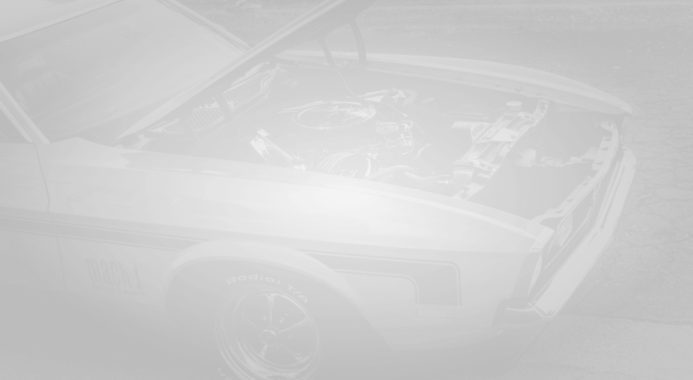
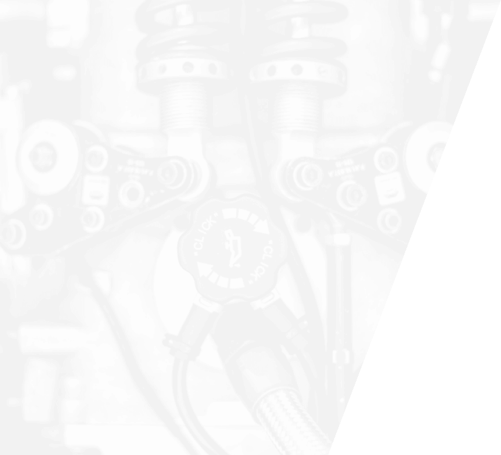

Naturally, Eckhard Marks develops a love
for technical performance and the genius
behind the machine,
and starts collecting legendary cars.
At the same time, he likes to pair his cars
with his watches.
Chapter 2
The inspiration
Engine

But what he is truly obsessed about,
is the detail.
He decides to cross the border, and
enters the prestigious world of
Swiss microtechnology.
Study
In this world, his two passions meet up :
both speak the same language.
- Emissions
- Lubrification
- Spring
- Sprocket
- Camshaft
Common
The wedding is successful.
A great project grows in the new watchmaker’s mind.
A project that
will be intimatly linked to him,
and will tell his own story.
Passion

Go to Chapter 3